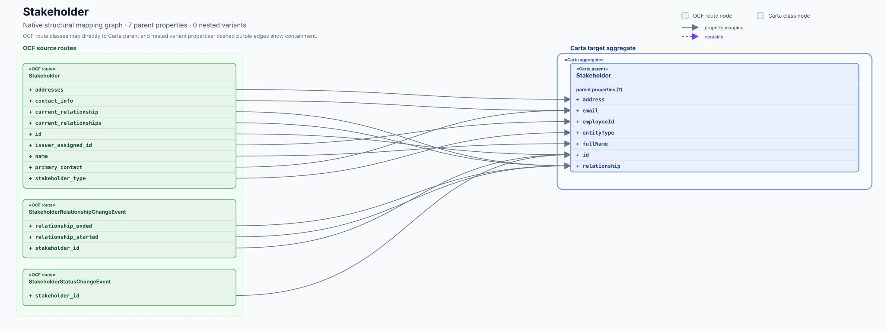

Carta record definition
Stakeholder
#/$defs/Stakeholder
{kind=link}

Target evidence
Who can fill this target?
Stakeholder— · current_relationships · OCF type: array<StakeholderRelationshipType> ↗
Open mapping issue ↗StakeholderRelationshipChangeEvent— · relationship_started · OCF type: StakeholderRelationshipType ↗
Open mapping issue ↗StakeholderStatusChangeEvent— · stakeholder_id · OCF type: string ↗
Open mapping issue ↗Property ledger
Slot by slot
Schema types are shown for both sides of each mapping slot.
| Carta property / type | Status | OCF evidence / type | |
|---|---|---|---|
| addressCarta type StakeholderAddress ↗ | direct | Stakeholder.addressesOCF type array<Address> ↗ | Issue ↗ |
| emailCarta type string ↗ | direct | Stakeholder.contact_infoOCF type ContactInfoWithoutName ↗Stakeholder.primary_contactOCF type ContactInfo ↗ | Issue ↗ |
| employeeIdCarta type string ↗ | direct | Stakeholder.issuer_assigned_idOCF type string ↗ | Issue ↗ |
| entityTypeCarta type StakeholderEntityType ↗ | direct | Stakeholder.stakeholder_typeOCF type StakeholderType ↗ | Issue ↗ |
| fullNameCarta type string ↗ | direct | Stakeholder.nameOCF type Name ↗ | Issue ↗ |
| groupCarta type string ↗ | empty | No OCF source evidence | Documented |
| idCarta type string ↗ | direct | Stakeholder.idOCF type string ↗StakeholderRelationshipChangeEvent.stakeholder_idOCF type string ↗StakeholderStatusChangeEvent.stakeholder_idOCF type string ↗ | Issue ↗ |
| issuerIdCarta type string ↗ | empty | No OCF source evidence | Documented |
| relationshipCarta type StakeholderRelationship ↗ | direct | Stakeholder.current_relationshipOCF type StakeholderRelationshipType ↗Stakeholder.current_relationshipsOCF type array<StakeholderRelationshipType> ↗StakeholderRelationshipChangeEvent.relationship_endedOCF type StakeholderRelationshipType ↗StakeholderRelationshipChangeEvent.relationship_startedOCF type StakeholderRelationshipType ↗ | Issue ↗ |